In this document, we discuss an alternative approach for solving the 2D Poisson problem:
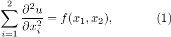 in the rectangular domain 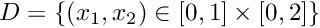. The domain boundary 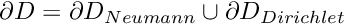, where 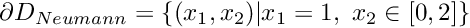. On 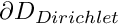 we apply the Dirichlet boundary conditions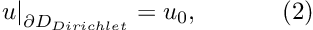 where the function 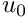 is given. On 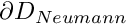 we apply the Neumann conditions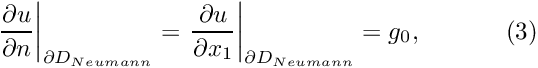 where the function 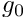 is given. |
In a previous example, we applied the Neumann boundary conditions by adding PoissonFluxElements (elements that apply the Neumann (flux) boundary conditions on surfaces of higher-dimensional "bulk" Poisson elements) to the Problem's Mesh object. The ability to combine elements of different types in a single Mesh object is convenient, and in certain circumstances absolutely essential, but it can cause problems; see the discussion of the doc_solution(...) function in the previous example. Furthermore, it seems strange (if not wrong!) that the SimpleRectangularQuadMesh – an object that is templated by a particular (single!) element type – also contains elements of a different type.
We shall now demonstrate an alternative approach, based on the use of multiple meshes, each containing only one type of element. The ability to use multiple Meshes in a single Problem is an essential feature of oomph-lib and is vital in fluid-structure interaction problems, where the fluid and solid domains are distinct and each domain is discretised by a different element type.
We consider the same problem as in the previous example and choose a source function and boundary conditions for which the function
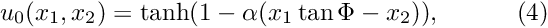
is the exact solution of the problem.

Global parameters and functions
The specification of the source function and the exact solution in the namespace TanhSolnForPoisson is identical to that in the single-mesh version discussed in the previous example.
The driver code
The driver code is identical to that in the single-mesh version discussed in the previous example.
The problem class
The problem class is virtually identical to that in the single-mesh implementation: The only difference is that we store pointers to the two separate Mesh objects as private member data, and provide a slightly different implementation of the function create_flux_elements(...).
[See the discussion of the 1D Poisson problem for a more detailed discussion of the function type PoissonEquations<2>::PoissonSourceFctPt.]
The Problem constructor
As before we start by creating the "bulk" mesh and store a pointer to this mesh in the private data member TwoMeshFluxPoissonProblem::Bulk_mesh_pt:
Next, we construct an (empty) Mesh and store a pointer to it in the private data member TwoMeshFluxPoissonProblem::Surface_mesh_pt.
We use the function create_flux_elements(...), to create the prescribed-flux elements for the elements on boundary 1 of the bulk mesh and add them to the surface mesh.
We have now created all the required elements and can access them directly via the two data members TwoMeshFluxPoissonProblem::Bulk_mesh_pt and TwoMeshFluxPoissonProblem::Surface_mesh_pt. However, many of oomph-lib's generic procedures require ordered access to all of the Problem's elements, nodes, etc. For instance, Problem::newton_solve(...) computes the entries in the global Jacobian matrix by adding the contributions from all elements in all (sub-)meshes. Ordered access to the Problem's elements, nodes, etc is generally obtained via the Problem's (single!) global Mesh object, which is accessible via Problem::mesh_pt(). The Problem base class also provides a private data member Problem::Sub_mesh_pt (a vector of type Vector<Mesh*>) which stores the (pointers to the) Problem's sub-meshes. We must add the pointers to our two sub-meshes to the problem,
and use the function Problem::build_global_mesh() to combine the Problem's sub-meshes into a single, global Mesh that is accessible via Problem::mesh_pt():
The rest of the constructor is identical to that in the single-mesh implementation. We pin the nodal values on the Dirichlet boundaries, pass the function pointers to the elements, and set up the equation numbering scheme:
"Actions before solve"
The only (minor) change to Problem::actions_before_newton_solve() is that the nodes on the boundaries of the bulk (!) mesh are now obtained via the Bulk_mesh_pt pointer, rather than from the combined Mesh, pointed to by Problem::mesh_pt(). While this may appear to be a trivial change, it is a potentially important one. Recall that the surface mesh is an instantiation of the Mesh base class. We created the (empty) mesh in the Problem constructor (by calling the default Mesh constructor), and used the function create_flux_elements(...) to add the (pointers to the) prescribed-flux elements to it. The surface mesh therefore does not have any nodes of its own, and its lookup schemes for the boundary nodes have not been set up. The combined mesh, pointed to by Problem::mesh_pt(), therefore only contains the boundary lookup scheme for the bulk mesh. Hence, the combined mesh has four boundaries and their numbers correspond to those in the bulk mesh.
If we had set up the boundary lookup scheme in the surface mesh, the constructor of the combined Mesh, would have concatenated the boundary lookup schemes of the two sub-meshes so that the four boundaries in sub-mesh 0 would have become boundaries 0 to 3 in the combined mesh, while the two boundaries in the surface mesh would have become boundaries 4 and 5 in the combined Mesh. While the conversion is straightforward, it is obvious that Mesh boundaries are best identified via the sub-meshes.
Post-processing
The post-processing, implemented in doc_solution(...) is now completely straightforward. Since the PoissonFluxElements only apply boundary conditions, they do not have to be included in the plotting or error checking routines, so we perform these only for the elements in the bulk mesh.
Further comments
We mentioned that the Mesh constructor that builds a combined Mesh from a vector of sub-meshes, concatenates the sub-meshes' element, node and boundary lookup schemes. There are a few additional features that the "user" should be aware of:
- The sub-meshes should not contain any duplicate nodes or elements. If they do, the function
Problem::build_global_mesh()will issue a warning and ignore any duplicates. This is because theProblem'sglobalMeshobject is used by many functions in which operations must be performed exactly once for each node or element. For instance, in time-dependent problems, the functionProblem::shift_time_values(), which is called automatically byProblem::unsteady_newton_solve(...), advances all "history values" by one time-level to prepare for the next timestep. If this was done repeatedly for nodes that are common to multiple sub-meshes, the results would be incorrect. If your problem requires a combined mesh in which duplicates are allowed, you must construct this mesh yourself. - Recall that the function
Mesh::add_boundary_node()"tells" the mesh's constituent nodes which boundaries they are located on. What happens if a (sub-)mesh for which this lookup scheme has been set up becomes part of a globalMesh? For various (good!) reasons, theMeshconstructor does not update this information. The boundary number stored by the nodes therefore always refers to the boundary in theMeshthat created them. If this is not appropriate for your problem, you must construct the combined mesh yourself.
Source files for this tutorial
- The source files for this tutorial are located in the directory:
demo_drivers/poisson/two_d_poisson_flux_bc2/ - The driver code is:
demo_drivers/poisson/two_d_poisson_flux_bc2/two_d_poisson_flux_bc2.cc
PDF file
A pdf version of this document is available.